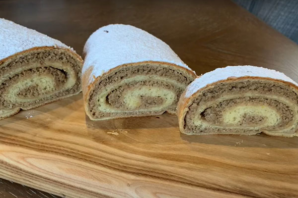
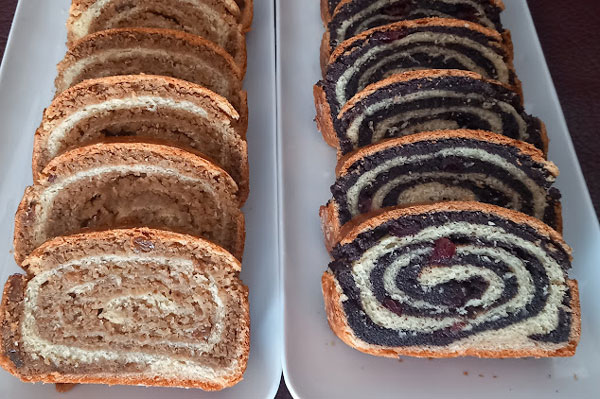
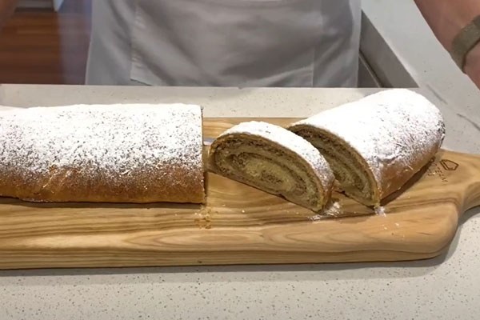
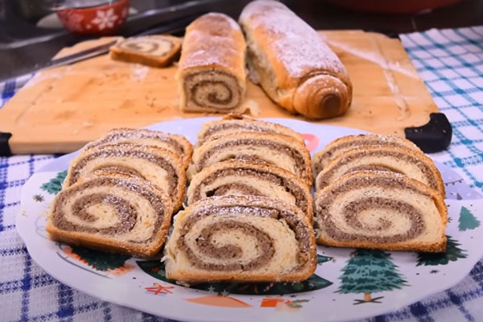
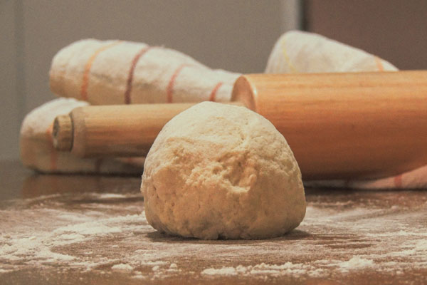
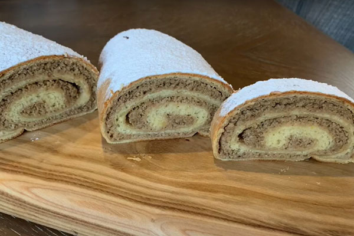
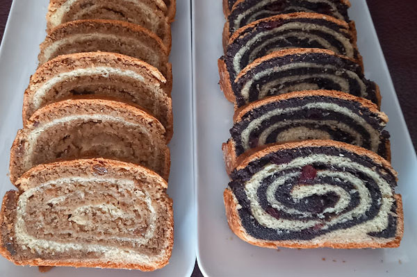
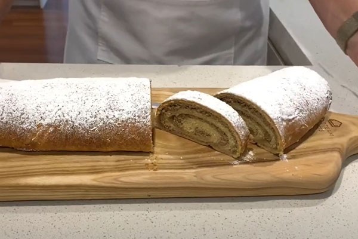
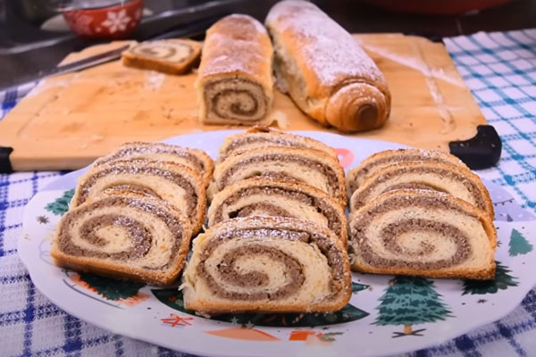
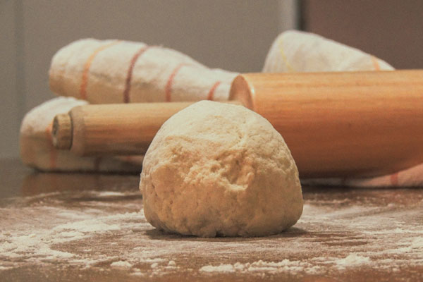

O našim štrudlama sa orasima
Naše štrudle sa orasima su pravljene po tradicionalnom receptu koji se prenosi sa generacije na generaciju. Svaka štrudla je ručno oblikovana i pečena sa puno ljubavi i pažnje. Koristimo samo najkvalitetnije orahe koje sami meljemo, kako bismo osigurali savršen ukus i teksturu koja se topi u ustima.
Štrudle pravimo svakodnevno, tako da su uvek sveže kada stignu do vas. Možete ih naručiti u različitim veličinama i količinama, u zavisnosti od vaših potreba. Idealne su za desert, uz kafu ili kao slatki zalogaj u bilo koje doba dana.
Naše štrudle sa orasima su poznate po svojoj bogatoj aromi i savršenoj teksturi, a tajna je u posebnom načinu pripreme testa i punjenja. Svaka štrudla je jedinstvena jer je ručno oblikovana, što im daje poseban šarm i autentičnost.
 









Vrste štrudli sa orasima
Klasična štrudla sa orasima
Tradicionalna štrudla sa bogatim punjenjem od oraha.
Štrudla sa orasima i medom
Štrudla sa orasima i dodatkom domaćeg meda za poseban ukus.
Posna štrudla sa orasima
Posna varijanta štrudle sa orasima, bez jaja i mlečnih proizvoda.
Kako naručiti
Naše štrudle sa orasima možete naručiti telefonom, putem kontakt forme na našem sajtu ili direktnom porukom na društvenim mrežama. Dostavljamo na teritoriji celog Beograda u roku od 24 sata od porudžbine.
Naruči odmah